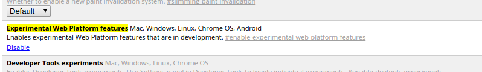
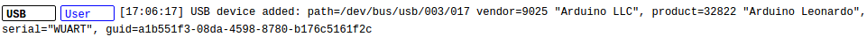

Seguro que estarás pensando en dispositivos de bus serie universal (USB) del estilo teclados, ratones, dispositivos de almacenamiento...
Hay otros dispositivos USB no estandarizados que necesitan unos controladores o un SDK nativo para que
los desarrolladores puedan aprovecharlos. Este código nativo a impedido que los dispositivos sean utilizados
en Web.
Vamos a conectar un Arduino Leonardo chip(ATmega32u4), explicaremos el proceso para SO serios (Linux)
...
Te invitamos a visitar nuestro repo en Github
API WebUSB
usb
La API de WebUSB porporciona a los vendedores de hardware una forma de exponer con seguridad los servicios de dispositivos USB a las Web.
Antes de empezar
La implementación de la API de WebUSB esta parcialmente completa en Chrome. Actualmente en la versión 58.0 de Chrome podemos habilitar con fines
de desarrollo las flags via la Url:
chrome://flags/#enable-experimental-web-platform-features
Habilitar Flags en Chrome
Buscamos las siguientes opciones, las habilitamos y reiniciamos Chrome. 

Obtener acceso a dispositivos USB
Desde la página de debug de dispositivos que nos proporciona Chrome tendremos acceso a los dispositivos conectados a nuestro
navegador mediante esta Url:
chrome://device-log
Podrás observar algo así:

Si al conectar el Arduino tienes en el log un dispositivo como en la foto con Permission denied, deberás seguir añadir una rule udev en los dispositivos Usb para poder utilizarlo.
Introduciendo norma Udev
En Linux los dispositivos USB se asignan solo con permisos lectura de forma predeterminada. Para proporcionar accesoa Chrome
a nuestro dispositivo deberemos añadir una regla udev El primer paso es saber el idVendor y el idProduct de nuestro dispositivo. Desde
el terminal con la orden lsusb podremos visualizar esta información:
003 Device 016: ID 2341:8036 Arduino SA Leonardo (CDC ACM, HID)
En
este caso el idVendor es 2341 y el idProduct es 8036.
Para añadir la norma udev deberemos crear un archivo
con la orden sudo nano /etc/udev/rules.d/99-arduino.rules con el siguiente contenido(sustituye el
idVendor y idProduct por los tuyos):
SUBSYSTEM=="usb", ATTR{{ '{' }}idVendor{{ '}' }}=="2341", ATTR{{ '{' }}idProduct{{ '}' }}=="8036", MODE="0664", GROUP="plugdev" ,
SYMLINK+="ttyUSB%n"
Hay que asegurarse de que tu usuario es miembro del grupo plugdev. Comando para ver los grupos que eres miembro groups, orden para añadirte al grupo sudo usermod -a -G plugdev nombredeusuario
Si todo ha ido bien, al conectar el Arduino en Chrome podremos ver en chrome://device-log que nuestro
dispositivo ya tiene permisos de lectura:

Sigue en la pestaña de Let's Code.
Fuentes:
https://developers.google.com/web/updates/2016/03/access-usb-devices-on-the-web
http://playground.arduino.cc/Linux/All